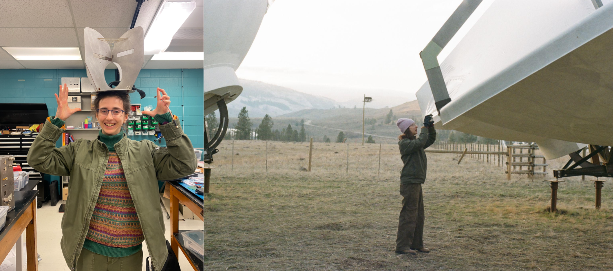
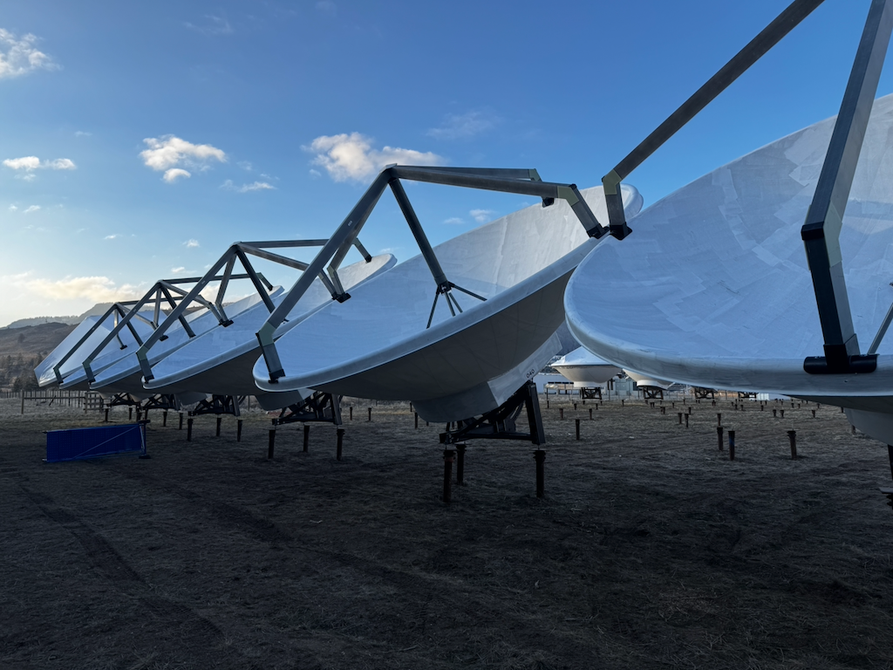

I began my PhD work in the Physics Department and Trottier Space Institute at McGill University in August 2024.
The 21 cm hydrogen signal provides a window into an unprecedentedly broad range of cosmic times and spatial scales, but the radio interferometers best suited to measuring its spatial distribution are plagued by a geometric inconvenience. The astrophysical foregrounds, whose relative spectral smoothness means they theoretically only occupy a narrow swath of Fourier space, are projected to a wider range of spatial scales by the frequency dependence of the response of pairs of antennas with different separations—each contributing a fundamental unit of signal. This conundrum means 21 cm cosmology has among the most stringent antenna response characterization requirements of applied RF science. This challenge is formidable, but there has never been a more exciting time to study the distribution of neutral hydrogen in the late universe.
In 2025, the Dark Energy Spectroscopic Instrument (DESI) Collaboration released an analysis of the spatial correlations between galaxies in its unprecedentedly extensive galaxy survey and performed inference, with results marginally favouring a description of dark energy that evolves over cosmic time, in direct contrast to our working understanding of dark energy as a ``cosmological constant" (the Λ of ΛCDM cosmology). Only at late cosmic times does the universe become dark energy–dominated, so recent cosmic history is the most suitable laboratory for these measurements. Collecting more data will be helpful, but spatially resolving galaxies is only realistic out to fairly limited cosmic distances, and, even then, is prone to selection effects. An up-and-coming technique known as line intensity mapping (LIM), where telescopes with relatively low angular resolution capture the total integrated emission of a tracer of the underlying matter distribution, is an appealing alternative. Current-generation 21 cm hydrogen intensity mapping–aware radio telescopes, like the Canadian Hydrogen Intensity Mapping Experiment (CHIME) and extended Karoo Array Telescope (MeerKAT), have proven the concept of late-universe 21 cm intensity mapping, but instrumental idiosyncrasies have limited the scope of their results so far.
The Canadian Hydrogen Observatory and Radio-transient Detector (CHORD), marks a point of inflection to next-generation observatories. The 64-antenna CHORD pathfinder is already observing, and the full 512-antenna telescope will be online by late 2027. CHORD will observe the northern radio sky primarily by letting the sky drift overhead, but the array is also repointable by 30º on either side of zenith. It was designed with control over instrumental systematics in mind, which will help us target unprecedentedly detailed measurements at even the cosmologically fascinating largest spatial scales.
I am interested in all things CHORD cosmology. Sometimes you can find me tinkering with my end-to-end simulation pipeline that I use to characterize the effect of unaccounted-for imperfections in our sky response (beam) on the spatial power spectra we seek to calculate. Other times, you can find me scheming about how to use a repointable telescope adjacent to CHORD to measure its beam (a holographic beam measurement) or crunching interferometric visibilities to cross-correlate CHORD measurements with catalogued radio sources to form an independent all-sky beam measurement. I also occasionally help with CHORD deployment and data processing efforts, in the field and on the cluster.
In the medium term, I'm helping with CHORD 21 cm cosmology analyses and a possible upcoming cross-correlation with data from the Carbon Monoxide Array Mapping Project (COMAP).
Here's a picture of proto-CHORD from a Jan-Feb 2026 fieldwork trip I took to the Dominion Radio Astrophysical Observatory (near Kaleden, BC) to build feeds and conduct dish metrology:

For a more comprehensive overview of what I've been up to scientifically, feel free to consult my CV:
Beyond research, I enjoy volunteering at local astronomy outreach events such as AstroFest and Astronomie en Fût / Astronomy on Tap.
Outside science, you can find me going on improbably long urban walks, absorbing the Montréal world music scene, improvising exercises in improbable culinary fusion, learning about minoritized languages, hiking or jogging, reading infrarealism and what could maybe be described as post–magical realism, pondering Judeofuturism and its cousins, playing a subset of linguistic and geographical puzzle games with my friends, taking poetic inspiration from 1970s-90s Argentine rock, and crocheting topological curiosities.
Here are some pictures I've taken in Montréal: